Mon, 09 Apr 2012 09:21:23 GMT
Ravensburger nos trae los puzzles de realidad aumentada
Ravensburger nos trae los puzzles de realidad aumentada
Se suele decir que lo bonito es disfrutar del camino y no llegar al destino. Posiblemente el que lo dijo nunca tuvo que hacer 400km para ir a veranear en un seiscientos con toda tu familia en pleno agosto, o … Sigue leyendo →
historias relacionadas
¿Te pondrás las gafas de realidad aumentada de Google?
Tsunamis de realidad aumentada para tu iPhone
Se suele decir que lo bonito es disfrutar del camino y no llegar al destino. Posiblemente el que lo dijo nunca tuvo que hacer 400km para ir a veranear en un seiscientos con toda tu familia en pleno agosto, o lo mismo era un fans de los puzzles que se justificaba a sí mismo cuando finalmente colocaba la última pieza y se daba cuenta de que el puzzle ya no daba para más. Pero ahora gracias a una empresa alemana y la “magia” de la realidad aumentada, tus puzzles cobrarán vida al terminarlos.
Pinche aquí para ver el vídeo
Bueno, vida lo que se dice vida, no mucha, pero sí cierta posibilidad de interacción. Ravensburger, que para nuestra tranquilidad se dedica a fabricar puzzles y no al negocio de la comida rápida, plantea incluir en cada uno una aplicación para iOS.
Está aplicación comprobará cuando al puzzle no le falte ninguna pieza y desbloqueara funciones acordes con la temática del puzzle. De esta forma, en uno de un paisaje submarino veremos peces dando vueltas y otros como en los de ciudades tendremos panoramas.
Ya están disponibles en Europa por 15 euros, lo que no es precisamente barato para un puzzle de 1.000 piezas y que nos hace pensar si la aplicación que traen es realmente gratuita como pone en la caja.
Si al menos incluyeran aplicaciones útiles para hacer un puzzle, como un detector de piezas de esquina y bordes, un clasificador automático por colores o tal vez música relajante para cuando te desesperes por no encontrar esa maldita pieza con una cara o cuando poco a poco te das cuenta que hay demasiados huecos para tan pocas piezas sueltas. [Gizmag]
Sun, 08 Apr 2012 21:52:34 GMT
Nokia Lumia 900 [Lo verás en cualquier lugar]
Nokia Lumia 900 [Lo verás en cualquier lugar]
Y no lo verás porque se vaya a vender como rosquillas, aunque puede que sí, si no porque su tecnología de pantalla es la nueva presentada por Nokia llamada ClearBlack. El truco está en la cantidad de luz que refleja … Sigue leyendo →
historias relacionadas
Los ánodos de silicio de 3M mejoran hasta un 40% la capacidad de baterías
LG quiere llevarnos del smartphone al thinkingphone
Toray presenta un material capaz de auto-reparar arañazos en 10 segundos [Veredicto: y los vendedores de fundas nerviosos]
Atmel XSense promete pantallas táctiles curvadas y sin marcos
El brazo-teléfono [No hay mal que por bien no venga]
Y no lo verás porque se vaya a vender como rosquillas, aunque puede que sí, si no porque su tecnología de pantalla es la nueva presentada por Nokia llamada ClearBlack. El truco está en la cantidad de luz que refleja la pantalla que es mucho menor. Es decir se parece mucho menos a un espejo cuando le dá el Sol.
Para que os hagáis una idea la pantalla de un iPad tiene una reflexión del 44 % de la luz que incide sobre su pantalla mientrás que la tecnología ClearBlack de Nokia baja este índice hasta un 4,4 %.
La pantalla del Nokia Lumia 900, equipado con Windows Mobile tiene una definición de 480 x 800 píxeles con tecnología OLED de 4,3 pulgadas. Este mínimo de reflexión lo consigue con una serie de filtros polarizadores que deja pasar la luz que genera la propia pantalla pero filtra los reflejos provenientes de la luz ambiental o solar.
Para que los gizmoadictos hagáis un poco de ganas os dejamos una galería de imágenes.

[CNET]
Sun, 08 Apr 2012 16:05:17 GMT
El brazo-teléfono [No hay mal que por bien no venga]
El brazo-teléfono [No hay mal que por bien no venga]
Cuanto más avanzados se han hecho los Smartphones más han aumentado su tamaño. Atrás quedó la época en que la miniaturización de los teléfonos llegó a cotas ridículas para hacerlos más usables con sus teclados y pantallas táctiles. Pero la cosa … Sigue leyendo →
historias relacionadas
Amazon abre su tienda de ebooks en español con más de 30.000 títulos
SushiBot, la impresora que lía 300 rollos de maki por hora
ODDNS, el anti-SOPA legal
Impresora de chocolate 3D [Se acabaron las depresiones tecnológicas]
Nokia Lumia 900 [Lo verás en cualquier lugar]
Cuanto más avanzados se han hecho los Smartphones más han aumentado su tamaño. Atrás quedó la época en que la miniaturización de los teléfonos llegó a cotas ridículas para hacerlos más usables con sus teclados y pantallas táctiles. Pero la cosa se complica si sólo tienes un brazo y una mano sustituida por un garfio. ¿Dónde guardar el teléfono? Pues en el brazo.
Nuestro amigo Trevor pensó en como darle un mejor provecho a su brazo ortopédico y pensó que era el lugar adecuado para alojar su Nokia C7, y la verdad es que no parece mala idea. Y no creáis que lo hizo en caliente si no que se lo pensó un poco.
Consultó a expertos de Nokia para que le aconsejaran sobre la mejor posición del dispositivo para su uso sin sacarlo de su especial funda y con expertos ortopédicos para ver si su plan era factible.
El resultado está en la imagen superior. Un perfecto y práctico soporte en el interior de su antebrazo ortopédico con el que puede consultar Internet y escribir con su mano derecha sin problemas. [The Thelegraph]
Sun, 08 Apr 2012 08:24:52 GMT
ODDNS, el anti-SOPA legal
ODDNS, el anti-SOPA legal
Ya conocemos leyes como SOPA o SINDE mediante las cuales los gobiernos pretenden censurar, en cierta manera así es, Internet. Y para desconectar páginas web rápidamente se sirven de los DNS, los servidores que traducen las páginas web en direcciones … Sigue leyendo →
historias relacionadas
Mame Cam XL DSLR, la versión de bolsillo de la Canon 5D MK III
Amazon abre su tienda de ebooks en español con más de 30.000 títulos
SushiBot, la impresora que lía 300 rollos de maki por hora
El brazo-teléfono [No hay mal que por bien no venga]
Impresora de chocolate 3D [Se acabaron las depresiones tecnológicas]
Ya conocemos leyes como SOPA o SINDE mediante las cuales los gobiernos pretenden censurar, en cierta manera así es, Internet. Y para desconectar páginas web rápidamente se sirven de los DNS, los servidores que traducen las páginas web en direcciones físicas de servidores en la red. Pues ODDNS aparece para ser una alternativa real a este sistema.
El objetivo no es evitar dichas leyes si no el hacer más efectiva y menos crítica la resolución de nombres en Internet. Uno de los ataques más típicos que sufre una página web es la de falsear sus DNS’s para desactivarlo.
ODDNS es un sistema distribuido, como las redes de compartición de archivos P2P, mediante el cual la información de nombres no se encuentra centralizada en un conjunto de servidores, lo que facilita su falseamiento, si no distribuida en multitud de máquinas y además replicada en todas ellas y además de manera dinámica con lo que es realmente difícil saber dónde se encuentra dicha información en cada momento.
Para hacernos una idea, mientras el servicio DNS se basa en 13 servidores centrales en todo el mundo y un número limitado de servidores regionales, el servicio ODDNS irá multiplicando sus máquinas exponencialmente cuando nuevos usuarios se unan a él.
Para los gizmoadictos más extremos aquí os dejamos el código fuente de ODDNS que inicialmente se ha diseñado para convivir con DNS pero que aspira a sustituirlo completamente si tiene la suficiente implantación. [bandaancha.eu]
Sat, 07 Apr 2012 15:37:23 GMT
Atmel XSense promete pantallas táctiles curvadas y sin marcos
Atmel XSense promete pantallas táctiles curvadas y sin marcos
No es el primer prototipo parecido que se anuncia, y por la Web encontraremos infinidad de futur concepts y proyectos similares, pero quizá el futuro está realmente ya más cerca de lo que nos parece. Atmel, un fabricante de componentes … Sigue leyendo →
historias relacionadas
EasyPay de Apple, cuando para pagar lo único que necesitas es un dispositivo iOS
Los ánodos de silicio de 3M mejoran hasta un 40% la capacidad de baterías
LG quiere llevarnos del smartphone al thinkingphone
Toray presenta un material capaz de auto-reparar arañazos en 10 segundos [Veredicto: y los vendedores de fundas nerviosos]
Nokia Lumia 900 [Lo verás en cualquier lugar]
No es el primer prototipo parecido que se anuncia, y por la Web encontraremos infinidad de futur concepts y proyectos similares, pero quizá el futuro está realmente ya más cerca de lo que nos parece. Atmel, un fabricante de componentes electrónicos bastante reconocido (ha incluido sus pantallas en algunos de los productos de Samsung más punteros) ha anunciado que con su concepto del XSense está ya muy cerca de conseguir pantallas táctiles curvadas -y sin bordes- que funcionen a la perfección. Un prometedor vídeo tras el salto
Hasta el momento se había conseguido hacer pantallas táctiles con pequeñas curvaturas, pero en el proceso estas perdían mucha eficacia y precisión. Según anuncia Atmel con las XSense esto no pasará y en breve podremos aplicar estos diseños a todo tipo de gadgets y accesorios (Teléfonos móviles, tablets, relojes, pantallas de todo tipo de dispositivos, etc.)
Además de la curvatura, que resulta muy interesante para aparatos muy concretos, el hecho de poder fabricar pantallas sin bordes y marcos también provocaría seguro interesantes diseños. Quizá ya no estemos tan lejos de ver un iPad o tablet tan espectacular como el que os presentábamos aquí hace no mucho tiempo. ─ [Engadget y YouTube]
Sat, 07 Apr 2012 10:29:28 GMT
Toray presenta un material capaz de auto-reparar arañazos en 10 segundos [Veredicto: y los vendedores de fundas nerviosos]
Toray presenta un material capaz de auto-reparar arañazos en 10 segundos [Veredicto: y los vendedores de fundas nerviosos]
Para que unos triunfen otros a veces deben desaparecer, y no estoy yo muy seguro de si a los vendedores de fundas y accesorios (para portátiles, tablets, smartphones y demás gadgets) les va a hacer mucha gracia los avances que … Sigue leyendo →
historias relacionadas
EasyPay de Apple, cuando para pagar lo único que necesitas es un dispositivo iOS
Los ánodos de silicio de 3M mejoran hasta un 40% la capacidad de baterías
LG quiere llevarnos del smartphone al thinkingphone
Atmel XSense promete pantallas táctiles curvadas y sin marcos
Nokia Lumia 900 [Lo verás en cualquier lugar]
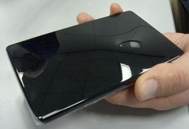
Para que unos triunfen otros a veces deben desaparecer, y no estoy yo muy seguro de si a los vendedores de fundas y accesorios (para portátiles, tablets, smartphones y demás gadgets) les va a hacer mucha gracia los avances que se están haciendo últimamente sobre materiales y coberturas especiales que tiene capacidad para auto-repararse. La multinacional Japonesa Toray dice ahora tener en fase de desarrollo un material que es capaz de reparar los rasguños sufridos en apenas 10 segundos.
No es este el primer material de este tipo que os presentamos aquí, pues esta funda para iPhone de Nissan también promete más o menos lo mismo; pero lo desarrollado por Toray parece que sería más efectivo y el proceso de auto-reparación también mucho más rápido, y ya estarían probándola y aplicándola en diversos campos. Realmente si este recubrimiento de auto-curación funcionara correctamente sería una revolución para la industria, pues muchas veces el diseño y las funcionalidades de la electrónica de consumo se ven gravemente perjudicados por el paso del tiempo y la dejadez de algunos. Seguro que todos tenéis el típico móvil antiguo o la cámara compacta de hace unos años con la pantalla del visor totalmente llena de arañazos y casi inservible ¡Dos clásicos!
Estos compuestos tendrían en teoría una estructura química particular que les permite recuperar la estructura original después de sufrir un golpe o abrasión, y supuestamente esta capa de auto-reparación de Toray contará además con propiedades elásticas y de amortiguación. Eso sí, si la ralladura es lo suficiente profunda como para atravesar esa pequeña primera “capa mágica” ya nadie nos salvará de tener que poner a nuestro Gadget una funda o pequeña pegatina. Al fin y al cabo, ¿A quién no se le ha caído alguna vez el teléfono al suelo o le ha dado un golpe accidental? Es como en los coches, el primer arañazo o golpe siempre es el más doloroso, y ya después… ─ [Ubergizmo]
Fri, 06 Apr 2012 21:04:21 GMT
SushiBot, la impresora que lía 300 rollos de maki por hora
SushiBot, la impresora que lía 300 rollos de maki por hora
¿Te gusta la comida japonesa? ¿Eres un amante del sushi? ¿Te los comes como si no hubiera un mañana? ¿Tienes un nutrido grupo de amigos con parecidas aficiones gastronómicas? Pues SushiBot es justo lo que necesitábais. Un robot de cocina … Sigue leyendo →
historias relacionadas
Mame Cam XL DSLR, la versión de bolsillo de la Canon 5D MK III
Amazon abre su tienda de ebooks en español con más de 30.000 títulos
ODDNS, el anti-SOPA legal
El brazo-teléfono [No hay mal que por bien no venga]
Impresora de chocolate 3D [Se acabaron las depresiones tecnológicas]
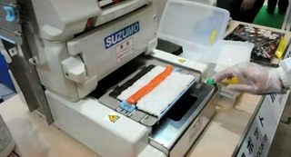
¿Te gusta la comida japonesa? ¿Eres un amante del sushi? ¿Te los comes como si no hubiera un mañana? ¿Tienes un nutrido grupo de amigos con parecidas aficiones gastronómicas? Pues SushiBot es justo lo que necesitábais. Un robot de cocina con pinta de impresora que es capaz de elaborar 300 deliciosos rollos de maki en una hora. ¿Seréis capaces de mantenerle el ritmo? A continuación te mostramos un vídeo de esta máquina en acción.
Se ha presentado en la Gran Exposición Mundial de Comida y Bebida 2012 en Tokyo.
El proceso de elaboración de los deliciosos rollos maki, plato fundamental de la comida japonesa a base del arroz preparado en forma de sushi, tiene su complejidad/entretenimiento a la hora de confeccionarlo. Ya tardaban en inventar una máquina que lo haga de forma automática… ¡y a qué velocidad!
Casi parece destinado a restaurantes con gran cantidad de comensales pero si eres un verdadero apasionado puede servir a tus propósitos dado que es capaz de ofrecerte en una hora más de 3.500 rodajas de rollo maki.
Basta para ello que lo alimentes con el arroz, vayas ubicando en la superficie destinada a tal efecto las láminas de alga nori y (esto es lo único que no hace) tener preparado el relleno para el rollo maki, que siempre dependerá del gusto.
Salmón, anguila, pepino u otras verduras que ya habrás dispuesto en la forma adecuada y que como puedes ver en este vídeo bastará con colocar en medio del protorollo para que en unos segundos esté todo enrrollado y prensado como debe ser.
Y ya sólo te hace falta wasabi, raíz de jengibre, salsa de soja, unos palillos y a comer. ─[Suzumo vía GadgetLab]
Fri, 06 Apr 2012 19:18:22 GMT
El Consejo de Europa quiere que se tenga “derecho al olvido” en las redes sociales
El Consejo de Europa quiere que se tenga “derecho al olvido” en las redes sociales
Los estados miembros de la Unión Europea han recibido una recomendación por parte del Consejo de Europa en la que insta a estos países a favorecer el control por parte de sus ciudadanos sobre las informaciones que sobre ellos aparecen … Sigue leyendo →
historias relacionadas
¿Cuánto porno hay en Internet? [Veredicto: una jartá, en términos técnicos]
¿Degustamos con las orejas?
Foto: Celebrando la Pascua con 10.000 huevos de colores
Bono invierte en Dropbox
Las otras caras de Google glasses, parodiadas claro…
Los estados miembros de la Unión Europea han recibido una recomendación por parte del Consejo de Europa en la que insta a estos países a favorecer el control por parte de sus ciudadanos sobre las informaciones que sobre ellos aparecen en las redes sociales, lo que incluye poder borrar sus perfiles por completo, lo que se ha dado en denominar “derecho al olvido” y que supondría eliminar todos los datos que Facebook, Twitter, Tuenti… incluyen en sus archivos referentes a nuestras interacciones con sus herramientas.
La recomendación proviene del seno de este órgano, en concreto del Consejo de Ministros que reune a los titulares de Exteriores de toda la Unión Europea.
Se pide a los países que forman parte de este corpus comunitario que favorezcan a sus ciudadanos la posibilidad de retirar el consentimiento dado al inscribirse como usuario de las redes sociales en lo relativo al almacenamiento de datos personales, de manera que no sea el oferente del servicio quien tenga la potestad de guardarlos incluso en contra de la voluntad del usuario.
Esto incluye el derecho a emplear un seudónimo no siendo imperativo el uso de la identidad real para darse de alta en una red social.
Además se ha solicitado a los 47 países miembros que avancen en la prevención del cyberacoso a los menores de edad, solicitando igualmente a las redes sociales una mayor diligencia en la respuesta a denuncias de este tipo.
Aunque hay empresas especializadas en limitar o incluso eliminar tu presencia de la Red, como Salir de Internet, donde presumen (y con razón) de haber conseguido eliminar datos de Google, borrar datos de un Boletin Oficial y haber obtenido una resolución contra Microsoft (Bing) que le obliga a retirar datos de sus bases de datos.
Lo ideal sería que las propias redes sociales te ofreciesen esa opción de manera clara y sencilla. No perdamos la esperanza de que termine siendo así algún día. ─[Consejo de Europa / Salir de Internet]
Fri, 06 Apr 2012 17:37:45 GMT
Los taxis del futuro en NYC serán Nissan
Los taxis del futuro en NYC serán Nissan
En concreto se trata del modelo NV200 de la marca japonesa. Un monovolúmen quizá no demasiado ancho aunque capaz de albergar con comodidad a tres pasajeros con todo su equipaje. Ha sido presentado como nuevo taxi oficial neoyorquino y rompe … Sigue leyendo →
historias relacionadas
Terrafugia Transition, el primer coche volador que culmina las pruebas y que podría venderse este mismo año
earHeros, los miniauriculares que además de la música te dejan oír la bocina del coche que iba a atropellarte
Sonic Walk, con la música al hombro a todas partes
En concreto se trata del modelo NV200 de la marca japonesa. Un monovolúmen quizá no demasiado ancho aunque capaz de albergar con comodidad a tres pasajeros con todo su equipaje. Ha sido presentado como nuevo taxi oficial neoyorquino y rompe la línea de las habituales (y enormes) berlinas amarillas habituales de la Gran Manzana, pero a cambio se consiguen vehículos más seguros, compactos, con techo de cristal panorámico y respetuosos con el medio ambiente.
Se prometen niveles de seguridad, comodidad e innovacion sin precedentes para un modelo que cada día acumula más de 600.000 viajes en la ciudad de los rascacielos.
Desde finales de 2013 será el taxi oficial de Nueva York, según ha anunciado Carlos Ghosn, presidente de la corporación de este servicio. Entre otras características que aunan comodidad y seguridad figuran sus puertas laterales corredizas de manera que al abrirse no interfieran con otros usuarios de la vía (peatones, ciclistas…), puertas que además cuentan con un escalón escamoteable automático para facilitar el acceso.
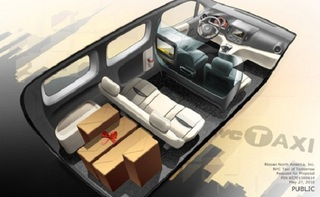
En el interior se ha replantado la organización del espacio para acomodar a los pasajeros y su equipaje, añadiendose una gran pantalla en la que recibir información sobre la ciudad que nunca duerme. No falta ni un detalle, como puede verse en las puertas correderas incluso hay un soporte para el paraguas.
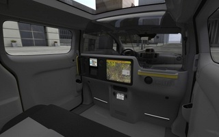
Los pasajeros podrán recargar sus dispositivos mientras hacen uso de este taxi gracias a unos conectores especiales en la parte trasera del vehículo, que además mantiene un elevado nivel de seguridad debido a la presencia de airbags de cortina. El automóvil se construirá en la fábrica de Nissan en la localidad mexicana de Cuernavaca mientras que para el mercado europeo será la fábrica de Barcelona la encargada de servir este taxi con un motor 2.0 de 4 cilindros con especial atención a la reducción de emisiones y de consumo de combustible.
El coste final del taxi Nissan NV200, con todos su equipamiento de serie, será inferior a 23.000 €. ─[Univision]
Fri, 06 Apr 2012 17:05:32 GMT
Amazon abre su tienda de ebooks en español con más de 30.000 títulos
Amazon abre su tienda de ebooks en español con más de 30.000 títulos
Es probablemente la mayor tienda de Internet, y ya tiene su propia sección de libros en español. Se trata de Amazon y ya ha comenzado a distribuir libros en español, con su propia línea telefónica de atención en este idioma … Sigue leyendo →
historias relacionadas
Mame Cam XL DSLR, la versión de bolsillo de la Canon 5D MK III
SushiBot, la impresora que lía 300 rollos de maki por hora
ODDNS, el anti-SOPA legal
El brazo-teléfono [No hay mal que por bien no venga]
Impresora de chocolate 3D [Se acabaron las depresiones tecnológicas]

Es probablemente la mayor tienda de Internet, y ya tiene su propia sección de libros en español. Se trata de Amazon y ya ha comenzado a distribuir libros en español, con su propia línea telefónica de atención en este idioma destinado principalmente a sus clientes de HIspanoamérica. Clásicos y últimas novedades a cascoporro y en español, con muchos títulos gratuitos.
La última sensación literaria que pretende heredar la pasión por las sagas de libros que dejó huérfana J.K. Rowling al concluir las aventuras de Harry Potter es “Los juegos del hambre“.
En Amazon ya puedes adquirir la versión electrónica en español junto a obras de los más recientes autores hispanoamericanos premiados con el Nobel de Literatura como Gabriel García Márquez, Camilo José Cela o el más reciente ganador, Mario Vargas Llosa.
Además hay disponibles más de mil títulos en español gratuitos con obras clásicas de nuestra Literatura. Todo eso y mucho más para los usuarios de Kindle y para aquellos que no tengan esos lectores de libros electrónicos de la propia Amazon pero sí puedan instalar en sus dispositivos (móvil, tablet…) la aplicación oportuna para poder disfrutar de este extensa oferta de libros en español. ─[Amazon]
Fri, 06 Apr 2012 13:03:14 GMT
¿Degustamos con las orejas?
¿Degustamos con las orejas?
Una serie de estudios y experimentos realizados en el Reino Unido han demostrado que no sólo nuestra vista y olfato están conectados con nuestro sentido del gusto, también lo está el oído. ¿Quiere esto decir que para quitarnos el ansia … Sigue leyendo →
historias relacionadas
¿Cuánto porno hay en Internet? [Veredicto: una jartá, en términos técnicos]
El Consejo de Europa quiere que se tenga “derecho al olvido” en las redes sociales
Foto: Celebrando la Pascua con 10.000 huevos de colores
Bono invierte en Dropbox
Las otras caras de Google glasses, parodiadas claro…
Una serie de estudios y experimentos realizados en el Reino Unido han demostrado que no sólo nuestra vista y olfato están conectados con nuestro sentido del gusto, también lo está el oído. ¿Quiere esto decir que para quitarnos el ansia de gominolas podemos escuchar el Leti-rap? Hombre, el Leti-rap te quitará eso y las ganas de vivir, pero la conexión oído-gusto se refiere más bien a que los sonidos modifican el sabor de lo que tomamos.
Charles Spence, investigador multisensorial de Londres, ha comprobado que al encontrarnos ante sabores que compiten, es posible cambiar el sabor dominante reproduciendo de fondo sonidos que relacionemos con ellos, como por ejemplo pollos piar para los huevos o beicon friéndose.
Pero en otro estudio llevado a cabo por Anne-Sylvie Crisinel de la Universidad de Oxford, se ha comprobado incluso que tendemos a asociar lo dulce y ácido con las notas agudas, y lo salado o amargo con las graves. Para ello pidieron a unos voluntarios asociar comidas y bebidas con diferentes notas y se obtuvieron asociaciones consistentes.
También se realizó un experimento con 20 personas a oscuras y con auriculares escuchando música de fondo, se les dio a probar toffee. A pesar de que siempre era del mismo tipo, cuando predominaban las notas agudas el toffee les parecía más dulce.
Por ahora no se sabe muy bien las razones de que tengamos esas sensaciones, ni si se debe a algo genético o social, pero al menos ya sabemos que para endulzar nuestras vidas nos basta con escuchar los mejores éxitos de los pitufos maquineros mientras comemos. [The Smithsonian]
Fri, 06 Apr 2012 11:09:39 GMT
YouTube convertirá automáticamente sus vídeos en 1080p a 3D
YouTube convertirá automáticamente sus vídeos en 1080p a 3D
YouTube ya lleva unos años permitiendo contenido en 3D, además el año pasado introdujo una función de conversión automática de vídeos 2D a 3D. Pues ahora han decidido que está conversión se haga de manera automática en todos los vídeos … Sigue leyendo →
historias relacionadas
Toda la ventana indiscreta de la peli de Hitchcock en un único plano
Darth Vader, ese padre modélico
Impresora de chocolate 3D [Se acabaron las depresiones tecnológicas]
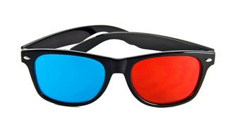
YouTube ya lleva unos años permitiendo contenido en 3D, además el año pasado introdujo una función de conversión automática de vídeos 2D a 3D. Pues ahora han decidido que está conversión se haga de manera automática en todos los vídeos de alta definición 1080p que se suban. Tranquilos que se trata de algo opcional a la hora de visualizar.
Ya sabéis que en Gizmodo nos encantan las 3D y las hemos introducido en nuestros reviews. La diferencia entre la conversión y la grabación directa en 3D es que la primera sólo es una simulación y a veces el resultado no es tan espectacular, además de posibles errores, pero aún así se trata de una añadido muy útil.
Aunque todavía las 3D no están siendo muy aceptadas, lleva con nosotros en la fotografía desde mitades del siglo XIX, cada vez más productores se interesan por ellas y la oferta en estos últimos años está creciendo exponencialmente.
La Nintendo 3DS, los móviles, los televisores y el cine 3D dan poco a poco pasos para hacer de la tridimensionalidad un estándar, aunque todavía queda mucho por hacer y decisiones como la de YouTube son un paso muy importante.
El sistema de YouTube estudia el vídeo y combinando características como el color, la composición y el movimiento crea un mapa de profundidad para cada fotograma. Usa además la adaptación por aprendizaje al realizar cada conversión, creando un par de imágenes, para la izquierda y derecha.
Para la conversión a gran escala utilizan un sistema paralelo en la nube, que permite dividir los vídeos en pequeñas secuencias que van transformándose poco a poco de manera simultánea.
Eso sí, a pesar de la conversión la calidad y el efecto creado por las grabaciones hechas con 2 cámaras siguen siendo mucho mejores, pero tras sufrir las “peculiaridades” de ir con cámaras dobles y 3D supongo que para muchos ésta es una opción más cómoda. [YouTube]
Thu, 05 Apr 2012 19:09:22 GMT
VozHD, porque hablar por el móvil también puede hacerse en alta definición
VozHD, porque hablar por el móvil también puede hacerse en alta definición
La alta definición no va a ser sólo cuestión de 1080p y de sonido 7.1. También las conversaciones telefónicas se merecen un sonido en alta definición, y eso es lo que promete la denominación VozHD (VoiceHD en su denominación en … Sigue leyendo →
historias relacionadas
Amazon abre su tienda de ebooks en español con más de 30.000 títulos
SushiBot, la impresora que lía 300 rollos de maki por hora
ODDNS, el anti-SOPA legal
El brazo-teléfono [No hay mal que por bien no venga]
Impresora de chocolate 3D [Se acabaron las depresiones tecnológicas]
La alta definición no va a ser sólo cuestión de 1080p y de sonido 7.1. También las conversaciones telefónicas se merecen un sonido en alta definición, y eso es lo que promete la denominación VozHD (VoiceHD en su denominación en inglés) que comienzan a ofrecer en USA algunos operadores a través de la tecnología LTE. Se acabó que de tu avanzado smartphone salga la voz de tu interlocutor como si te hablase desde un yogur con un cordel.
Prometen un salto similar al de la conexión a Internet con ADSL con respecto al primitivo cable de cobre básico. Transmisión de voz de banda ancha aprovechando la gran capacidad de las actuales tecnologías de transmisión de datos.
Básicamente ahora se trata de ampliar el rango de frecuencias de la transmisión de la voz, que actualmente oscila entre 300 Hz y 3,4 kHz y la VozHD llegaría desde los 50 Hz a los 7 kHz. Al ampliar por arriba y por abajo el rango de frecuencias se transmiten más ondas de sonido que enriquecen la calidad del sonido de la voz.
ALgunos ya han podido disfrutar de esta tecnología a través de las llamadas de voz sobre Internet (VoIP) como en la función HD de Skype mediante un codec de audio, Silk.
Esta semana el operador norteamericano Sprint ha mostrado por primera vez el empleo de un móvil compatible con VozHD, un HTC Evo 4G LTE aunque no comenzará a ofrecer comercialemente esta tecnología hasta mediados de año. En Reino Unido el operador Orange comenzó a ofrecer este servicio en 2010. El resultado es un sonido mucho más similar al de la voz natural y además con un menor nivel de ruido de fondo. Piensa en la diferencia entre un DVD y un Blu-Ray, pero en sonido. ─[Imagen: Markus Gann/Shutterstock]
Mon, 09 Apr 2012 08:22:27 GMT
Las otras caras de Google glasses, parodiadas claro…
Las otras caras de Google glasses, parodiadas claro…
Tras el anuncio y vídeo oficial de Google y sus gafas, la red se ha convertido en un hervidero de parodias de todo tipo. Hay que decir que aunque el vídeo de Google muestra el producto como algo genial que … Sigue leyendo →
historias relacionadas
¿Cuánto porno hay en Internet? [Veredicto: una jartá, en términos técnicos]
¿Degustamos con las orejas?
El Consejo de Europa quiere que se tenga “derecho al olvido” en las redes sociales
Foto: Celebrando la Pascua con 10.000 huevos de colores
Bono invierte en Dropbox
Tras el anuncio y vídeo oficial de Google y sus gafas, la red se ha convertido en un hervidero de parodias de todo tipo. Hay que decir que aunque el vídeo de Google muestra el producto como algo genial que funcionará siempre a la perfección, lo cierto es que estas parodias nos recuerdan los pormenores que puede llegar a tener esta tecnología en nuestra vida diaria.
Por un lado está mi favorita. Vale, está en inglés pero es rematadamente graciosa y nos acerca la exaltación del fenómeno hipster que probablemente despertarán las gafas.
Pinche aquí para ver el vídeo
En esta otra podemos ver las enormes “ventajas” de tener mensajitos apareciendo continuamente, como lo absurdo que serán muchos de los datos que nos de y el peligro para nuestra atención que conllevan.
Pinche aquí para ver el vídeo
Y como no, no puede faltar descubrir como sería la versión de Microsoft de esta curiosa tecnología, con toda la locura popupera y de alertas de seguridad que probablemente conllevaría.
Pinche aquí para ver el vídeo
Personalmente creo que estas gafas van a suponer una revolución al estilo Wii o Kinect, que si bien no cambiarán el formato de los smartphones si que harán que la realidad aumentada se expanda y vayamos más allá de los interfaces táctiles.
Pero bueno, supongo que antes tendremos que acostumbrarnos para que no nos atropellen y veremos que opinará la DGT de usar sistema parecidos mientras se conduzca.
Sun, 08 Apr 2012 20:41:07 GMT
Impresora de chocolate 3D [Se acabaron las depresiones tecnológicas]
Impresora de chocolate 3D [Se acabaron las depresiones tecnológicas]
Hace unos años que comenzaron a aparecer las primeras impresoras 3D capaces de crear cuerpos tridimensionales a partir de polímeros e incluso pintarlos para darles un acabado lo más realista posible. Ahora aparece la impresora de chocolate 3D. ¿Te imaginas … Sigue leyendo →
historias relacionadas
YouTube convertirá automáticamente sus vídeos en 1080p a 3D
Amazon abre su tienda de ebooks en español con más de 30.000 títulos
SushiBot, la impresora que lía 300 rollos de maki por hora
ODDNS, el anti-SOPA legal
El brazo-teléfono [No hay mal que por bien no venga]
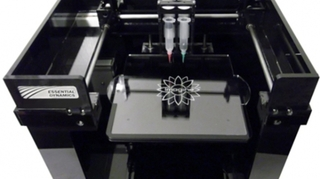
Hace unos años que comenzaron a aparecer las primeras impresoras 3D capaces de crear cuerpos tridimensionales a partir de polímeros e incluso pintarlos para darles un acabado lo más realista posible. Ahora aparece la impresora de chocolate 3D. ¿Te imaginas sus posibilidades?
Y la mejor noticia es que se comercializará este mismo mes y que han esperado a presentarla este mismo año para simplificarlas y hacerla fácil de usar tal y como dice su diseñador.
“Hemos mejorado y simplificado la máquina, por lo que ahora es muy fácil usarla. Solo se necesita derretir un poco de chocolate, llenar una jeringa que se coloca en la impresora y obtener una chocolatina con una forma original”, dice Liang Hao, científico de la Universidad de Exeter, que ha fundado la compañía Edge Choc con el fin de aprovechar el interés comercial que pueda suscitar el nuevo invento.
“Los usuarios pueden diseñar y fabricar sus propios chocolates, desde el rostro de un amigo a la forma del juguete favorito de un niño. A largo plazo podría ser desarrollado para ayudar a los consumidores a personalizar el diseño de muchos productos de diferentes materiales, pero hemos empezado por el chocolate”, comentó Liang Hao. [elmercuriodigital.es]
Sun, 08 Apr 2012 10:23:41 GMT
Bono invierte en Dropbox
Bono invierte en Dropbox
El cantante de U2, Bono, además de ser famoso por llenar estadios allá donde vaya, es conocido por sus campañas en favor del planeta y pro-ecologismo. Muchos son los que opinan que su casa irlandesa consume energía como una manzana de Dublín … Sigue leyendo →
historias relacionadas
¿Cuánto porno hay en Internet? [Veredicto: una jartá, en términos técnicos]
¿Degustamos con las orejas?
El Consejo de Europa quiere que se tenga “derecho al olvido” en las redes sociales
Foto: Celebrando la Pascua con 10.000 huevos de colores
Las otras caras de Google glasses, parodiadas claro…
El cantante de U2, Bono, además de ser famoso por llenar estadios allá donde vaya, es conocido por sus campañas en favor del planeta y pro-ecologismo. Muchos son los que opinan que su casa irlandesa consume energía como una manzana de Dublín pero ese es otro tema. Ahora él y su guitarrista, The Edge, han invertido en algo muy diferente: DropBox.
Esperamos que a estas alturas todos conozcáis una de las plataformas gratuitas para compartir archivos más difundida del mundo, DropBox. Pues bien, parece ser que es un negocio más que rentable ya que el cantante y lider de la banda de U2, Bono, y su guitarrista, The Edge, han invertido en esta compañía.
No es la primera vez que Bono invierte en tecnología ya que actualmente es fundador y gestor de Elevation Partners, empresa dedicada a inversiones tecnológicas en empresas como Facebook. Además está creando un fondo de inversión de mil millones de dólares para este tipo de inversiones. [Prensa Libre]
Sat, 07 Apr 2012 16:17:12 GMT
Foto: Celebrando la Pascua con 10.000 huevos de colores
Foto: Celebrando la Pascua con 10.000 huevos de colores
Cada festividad tiene sus tradiciones, y a menudo nos vemos envueltos en ceremonias y rituales que no acabamos bien de entender, o que simplemente hemos asumido como normales (a fuerza de repetirlos cada año) sin pararnos a pensar en lo … Sigue leyendo →
historias relacionadas
¿Cuánto porno hay en Internet? [Veredicto: una jartá, en términos técnicos]
¿Degustamos con las orejas?
El Consejo de Europa quiere que se tenga “derecho al olvido” en las redes sociales
Bono invierte en Dropbox
Las otras caras de Google glasses, parodiadas claro…
Cada festividad tiene sus tradiciones, y a menudo nos vemos envueltos en ceremonias y rituales que no acabamos bien de entender, o que simplemente hemos asumido como normales (a fuerza de repetirlos cada año) sin pararnos a pensar en lo que estamos haciendo. Es fiesta y no hay que ir al colegio/trabajo ¿Para qué complicarnos pensando en otras cosas? ¡A disfrutar! Pero visto que hay una pareja de tiernos ancianos que expone en estos días su colección de más de 10.000 huevos de Pascua, me he visto en la “obligación” de profundizar en este tema que desconocía.
Volker Kraft y su esposa Christa viven en Saalfeld (Alemania) y cada año decoran el árbol que tienen delante de su casa con las cáscaras pintadas y coloreadas de 10.000 huevos, componiendo una espectacular imagen que atrae anualmente a todos sus vecinos y parte de la población circundante, pues el árbol ya es toda una atracción turística de la zona.
Empezaron la Semana Santa de 1965 con tan solo 18 huevos, y la cosa parece que se les ha ido un poco de las manos pues las “unidades hueviles” se han multiplicado una barbaridad. Una vez llegados a las 10.000, parece que se han declarado como satisfechos y anuncian (si logran cumplirlo) que no aumentarán ya más su colección. “Simplemente ya no sé dónde ponerlos” declaró el protagonista. A mi lo que se me antoja de locos es la tarea de colgarlos y descolgarlos cada año, ¿no lo veis así? ¡Vaya huevada tarea!
Dicen que la tradición de los huevos de pascua tiene su origen en el Siglo IV. Entonces la Iglesia no aconsejaba el consumo de huevos durante la Cuaresma, pero las gallinas (ajenas habitualmente a los dictamines religiosos) seguían con su ritmo habitual de poner huevos, creando entonces un superávit temporal bastante importante. Todo esto con el agravante que no se podían conservar bien tanto tiempo como ahora.
Así pues el primer día después de la prohibición era habitual que aquellos que tenían sobreabundancia de huevos los ofrecieran gratuitamente a otras personas (pues había que darles una rápida salida), y si además los pintaban o decoraban ya constituían en si mismos un verdadero regalo. A posteriori, y ya en el siglo XII, la Iglesia bendeciría esa costumbre de regalar huevos como símbolo de la resurrección a la salida de la misa de Pascua… y así siglos más tarde dos pobres ancianos se dejan cada año la espalda y un poco de su salud para regocijo y deleite de los vecinos, pues el árbol adornado es ciertamente muy espectacular. ─ [Neatorama]
Sat, 07 Apr 2012 14:42:29 GMT
Sonic Walk, con la música al hombro a todas partes
Sonic Walk, con la música al hombro a todas partes
A pesar de que en el mercado ofrece numerosas soluciones para escuchar música mientras corremos y hacemos deporte, es bien cierto que todavía no se ha encontrado la combinación de reproductor y auriculares perfecta. Para algunos los que tienen diadema … Sigue leyendo →
historias relacionadas
Terrafugia Transition, el primer coche volador que culmina las pruebas y que podría venderse este mismo año
earHeros, los miniauriculares que además de la música te dejan oír la bocina del coche que iba a atropellarte
Los taxis del futuro en NYC serán Nissan
A pesar de que en el mercado ofrece numerosas soluciones para escuchar música mientras corremos y hacemos deporte, es bien cierto que todavía no se ha encontrado la combinación de reproductor y auriculares perfecta. Para algunos los que tienen diadema no son cómodos, a otros los de tipo in-ear se les caen o molestan con las vibraciones, los cables siempre son un engorro y a veces los inalámbricos no acaban de funcionar bien. ¿Puede ser Sonic Walk una buena solución? Este cachivache a medio camino entre mochila, tirantes, auriculares y boombox parece un poco extraño, pero bien pueden ser una buena opción.
Normalmente una buena idea para realizar largas sesiones footing es amenizar el rato con la radio o buena música, así parece que el tiempo pasa más rápido y las piernas no nos pesan tanto. Sucede pero que acarrear con el reproductor y los auriculares siempre es incómodo. Si bien los equipos de hoy ya no pesan tanto como los antiguos walkman (aquello era como entrenar con las botas y las muñequeras de plomo de Son Goku) no acaba de existir una solución perfecta para correr cómodamente sin notar los fastidiosos cables. El Sonic Walk es básicamente un arnés o “una mochila sin paquete”, que se adapta perfectamente a nuestro cuerpo y nos permite escuchar nuestra música preferida mediante dos altavoces situados en el punto más cercano a nuestro oído, unos cómodos altavoces portátiles para llevar a cuestas.
El fabricante nos ofrece varios modelos con diversas prestaciones, algunos podemos acoplarlos sobre nuestra mochila, y otros Sonic Walk incluyen accesorios también muy útiles como las luces LED para la visibilidad nocturna, bolsas de almacenamiento y los bolsillos de hidratación, etc. El modelo más básico sale aprox. por $90.
Es evidente con este sistema no nos aislamos del ruido exterior y oímos peor la música (aunque corriendo por vías urbanas esto también puede ser una ventaja, pues no seremos ajenos a las señales de otros conductores y viandantes), pero en este caso se prioriza la comodidad del corredor, que podrá también compartir así sus gustos musicales con el resto de los usuarios de la calle. Quien sabe, si en una carrera popular o competición vemos como se acerca un corredor con los éxitos de Los Chunguitos a todo volumen quizá nos sirva para acelerar el paso y batir nuestra propia marca. ─ [Gizmag]
Sat, 07 Apr 2012 09:11:29 GMT
El Thermosaurus, un divertido concepto de Dino-radiador
El Thermosaurus, un divertido concepto de Dino-radiador
Los radiadores de calor nunca habían sido especial objeto de mi atención, si calientan correctamente y cumplen su función ¿Para qué preocuparse más? Pero eso era hasta ver este precioso y original radiador con forma de pequeño Tyrannosaurus Rex ¿Quién … Sigue leyendo →
historias relacionadas
El esqueleto de neón, lo que le falta a la decoración de tu guarida
iOttie, el anillo de seguridad que te une a tu dispositivo móvil
Por fin puedes ser superhéroe, por fin Superman tendrá tu cara
Elementstair, la escalera de caracol portátil y modular
Imágenes del apocalipsis: así son las calles más populosas del mundo sin un alma circulando por ellas

Los radiadores de calor nunca habían sido especial objeto de mi atención, si calientan correctamente y cumplen su función ¿Para qué preocuparse más? Pero eso era hasta ver este precioso y original radiador con forma de pequeño Tyrannosaurus Rex ¿Quién no querría que el bienestar y el calor de su hogar dependa del rey de los dinosaurios del período Cretácico?
Y no necesariamente tiene que ser un elemento decorativo para la habitación de una criatura (a los que los dinosaurios les chiflan)… Seguro que en el comedor o en el despacho de un paleontólogo este calentito T-Rex quedaría de perlas. Y si eres de los que gusta dejar a las visitas bien impresionadas ¿Qué mejor que tener un terrorífico y huesudo bicho extinguido en la salita?
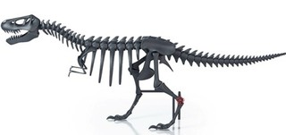
Lamentablemente este fogoso dinosaurio es todavía un concepto de diseño, un prototipo de radiador que todavía no está a la venta, pero que no dudo tendría su público y bastante éxito si decidieran fabricarlo. Yo no estoy ahora para financiar proyectos, pero depende del precio no dudaría en ponerme en la lista de posibles clientes.
Creado por Art Lebedev Studio, este dino-radiador de hierro fundido serviría también para calentar los calcetines y la bata en invierno, y como en la foto que acompaña cada vértebra y hueso podría adaptarse a diferentes funciones y prendas. Un regreso a la prehistoria bien caldeado. ─ [Technabob]
Fri, 06 Apr 2012 20:38:56 GMT
Darth Vader, ese padre modélico
Darth Vader, ese padre modélico
Es muy probable que “yo soy tu padre” sea una de las frases más famosas de la Historia del Cine. Y sus protagonistas, Darth Vader y Luke Skywalker, uno de los tándems padre-hijo más célebres de la gran pantalla. La … Sigue leyendo →
historias relacionadas
Toda la ventana indiscreta de la peli de Hitchcock en un único plano
YouTube convertirá automáticamente sus vídeos en 1080p a 3D
Es muy probable que “yo soy tu padre” sea una de las frases más famosas de la Historia del Cine. Y sus protagonistas, Darth Vader y Luke Skywalker, uno de los tándems padre-hijo más célebres de la gran pantalla. La pena es que por esas cosas del Reverso Tenebroso de la Fuerza su relación fue más bien tormentosa hasta que logró encarrilarse en el último momento. Pero ¿cómo habría sido todo si desde el primer momento el Señor Oscuro del Sith se hubiera tomado su paternidad de maner positiva y responsable? Qué gran padre podría haber sido, como nos demuestran estas divertidas viñetas que os ofrecemos a continuación.
Hay un universo paralelo que tuvo lugar hace mucho tiempo en una galaxia muy, muy lejana.

Es distinto al que conocemos según las películas de “Star Wars” porque en esta historia alternativa Vader no parece que termine cortándole una mano a su hijo. Al contrario, todo parece apuntar a que el pequeño Luke creció feliz educado por un infinitamente paciente Darth Vader.
Un Vader que no se queja cuando lleva a hombros a su hijo aunque este le tape los ojos, que le compra los muñecos que quiere, aunque san de Jar-Jar Binks y que juega con él al beisbol a pesa de que en vez de bate emplea un sable láser, con el consiguiente perjuicio para las bolas que le lanza.
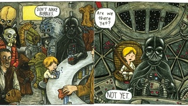
Eso es un padre, alguien que con mucha calma te dice que no hagas burbujas en el refresco que te tomas en la cantina de algún tugurio galáctico y que no emplea la Fuerza ni ningún truco Jedi pr muchas veces que le preguntes, mientras viajais por el espacio, aquello de “¿hemos llegado ya?“.
El autor es Jeffrey Brown, que ha creado un libro titulado “Darth Vader e hijo” que explora unas hilarantes situaciones que cualquier padre y cualquier hijo podrán reconocer, pero que a la luz de los protagonistas adquieren un nuevo y cómico sentido.
El libro estará a la venta el 4 de mayo a un precio de $15. ─[Design Taxi]
Fri, 06 Apr 2012 18:15:23 GMT
Imágenes del apocalipsis: así son las calles más populosas del mundo sin un alma circulando por ellas
Imágenes del apocalipsis: así son las calles más populosas del mundo sin un alma circulando por ellas
Puede parecer una revisitación de “Abre los ojos”/”Vanilla Sky”. O de cualquiera de las tres versiones de la magistral novela corta “Soy leyenda” de Richard Matheson (protagonizadas por Vincent Price, Charlton Heston o Will Smith). Ver las calles de una … Sigue leyendo →
historias relacionadas
iOttie, el anillo de seguridad que te une a tu dispositivo móvil
Por fin puedes ser superhéroe, por fin Superman tendrá tu cara
Mame Cam XL DSLR, la versión de bolsillo de la Canon 5D MK III
Elementstair, la escalera de caracol portátil y modular
El Thermosaurus, un divertido concepto de Dino-radiador
Puede parecer una revisitación de “Abre los ojos”/”Vanilla Sky”. O de cualquiera de las tres versiones de la magistral novela corta “Soy leyenda” de Richard Matheson (protagonizadas por Vincent Price, Charlton Heston o Will Smith). Ver las calles de una ciudad habitualmente repleta de peatones y vehículos completamente vacía es desasosegante sí o sí. O es un domingo de agosto. O son las fotografías de Lucie y Simon en las que los lugares más transitados del planeta se convierten en incómodos páramos desolados en los que no hay presencia humana, como se recoge en el vídeo que te ofrecemos a continuación.
En “Soy leyenda”, o como decía Cels Piñol “Soy merienda”, el protagonista es el último hombre que queda en un planeta cuyos habitantes se han convertido en vampiros por culpa de una epidemia.
El cine se ha encargado de transmitirnos la aplastante sensación de soledad a base de mostrarnos calles vacías por las que el protagonista circula sin perrico que le ladre. Bueno, sí, en un momento de la historia encuentra un perro pero lo que le sucede resulta demoledor.
Un sentimiento parecido nos producen las imágenes que han conseguido los fotógrafos Lucie y Simon, con un opresivo silencio debido a la ausencia de la habitual mansedumbre (aglomeración pacífica de personas) que obtienen mediante un filtro de densidad neutra. Algo que utiliza la NASA para analizar estrellas mediante un filtrado que ecualiza las longitudes de onda de la luz permitiendo a los fotógrafos capturas fotográficas de larga exposición de las que se puede eliminar fácilmente la mancha borrosa que dejarían los “rastros” de los transeuntes y los vehículos.
Pinche aquí para ver el vídeo
En alguna toma sí aparece una figura humana pero por la sencilla razón de que se trata de un individuo que permaneció inmóvil durante el tiempo en que Lucie y Simon efectuaban la fotografía.
Aunque como en los trucos de magia, producen su efecto si desconoces cómo se realizan, así que mejor disfruta con el vídeo. ─[Lucie & Simon]
Fri, 06 Apr 2012 17:31:48 GMT
Descubre cuantas bombas atómicas hacen falta para mandar la Tierra a tomar viento fresco
Descubre cuantas bombas atómicas hacen falta para mandar la Tierra a tomar viento fresco
La guerra fría se mantuvo “sin incidencias” de aniquilación masiva a escala mundial gracias a, al sentido común, o al temor al poder destructivo de las bombas atómicas y que, lanzar una, supusiera una respuesta en cadena por parte de … Sigue leyendo →
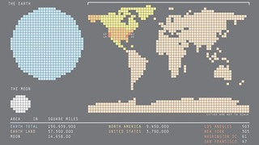
La guerra fría se mantuvo “sin incidencias” de aniquilación masiva a escala mundial gracias a, al sentido común, o al temor al poder destructivo de las bombas atómicas y que, lanzar una, supusiera una respuesta en cadena por parte de los demás países que terminaría mandando a toda la humanidad a freír espárragos trigueros. Pero ¿sería realmente posible cargarse la Tierra o la Luna completamente a base de bombas atómicas?
Ahora gracias al diseñador gráfico Maximilian Bode podemos saberlo. En este gráfico se puede ver la cantidad de destrucción que originó la primera bomba atómica usada en la II GM, la Little Boy con 15 kt, necesitándose más de 3 millones y medio de bombas para fulminar el planeta.
Por otro lado tenemos la bomba más potente jamás detonada, la Tzar rusa con 50.000 kt y que se bastaría sólo de 15.594 para volatilizar el planeta.
Teniendo en cuenta que en el mundo hay actualmente de manera aproximada 20.500 bombas con una media de 33.500 kt, casi que ya podemos terminar con el mundo sin que ni siquiera quede terreno para que las cucarachas sobrevivan.
Vale, en Regreso al Planeta de los Simios les bastaba con una, aunque no creo que ese mundo distópico llegue nunca a producirse, no porque hubiera gorilas parlanchines disparando fusiles, sino porque Charlton Heston era astronauta. [Maximilian Bode]
Fri, 06 Apr 2012 15:01:27 GMT
LG quiere llevarnos del smartphone al thinkingphone
LG quiere llevarnos del smartphone al thinkingphone
Para LG la era del smartphone ya ha pasado, el futuro está en el thinkingphone, un móvil que no sólo podrá hacer multitud de cosas como un smartphone, sino que “pensará” por si mismo. Sí el móvil del futuro tomará … Sigue leyendo →
historias relacionadas
Phonedeck lleva tu móvil Android a tu ordenador
VozHD, porque hablar por el móvil también puede hacerse en alta definición
Toray presenta un material capaz de auto-reparar arañazos en 10 segundos [Veredicto: y los vendedores de fundas nerviosos]
Atmel XSense promete pantallas táctiles curvadas y sin marcos
Nokia Lumia 900 [Lo verás en cualquier lugar]
Para LG la era del smartphone ya ha pasado, el futuro está en el thinkingphone, un móvil que no sólo podrá hacer multitud de cosas como un smartphone, sino que “pensará” por si mismo. Sí el móvil del futuro tomará decisiones adaptándose a las situaciones sin consultarte, para hacerte las cosas más fáciles, por “tu propio bien” y/o para suplantarte algún día.
¿Qué quiere decir que será inteligente? Pues según LG que será capaz de actuar combinando todo tipo de información y actuando para que tú no tengas que pensar y no haga falta que te preocupes por nada.
Un ejemplo que nos cuentan, es una alarma que a pesar de que la pongas a una hora, tenga en cuenta si hay tráfico en tu ruta al trabajo y te despierte antes.
Suena interesante pero ¿queremos realmente que un móvil tome decisiones por nosotros? Una cosa es que nos de información y actúe según nuestras ordenes, pero empieza levantándonos antes y terminará diciendo como debemos vestir, que debemos comer e incluso decidir el momento en el que pegarnos un tiro para que no sigamos sufriendo.
Tecnofobias aparte, todavía queda bastante para que LG nos sorprenda con sus thinkingphones, pero mientras su objetivo a corto plazo para convertirse en el principal fabricante Android y ser los creadores del siguiente Nexus sigue adelante. Veremos si lo consiguen. [The Verge]
Fri, 06 Apr 2012 12:01:56 GMT
Elementstair, la escalera de caracol portátil y modular
Elementstair, la escalera de caracol portátil y modular
Normalmente las escaleras son un elemento prácticamente estructural en una casa, pero el diseñador holandés Floris Schoonderbeek se ha planteado convertirla en un mueble que no sirva intrínsecamente para acceder a otra planta, sino simplemente como elemento decorativo o para … Sigue leyendo →
historias relacionadas
El esqueleto de neón, lo que le falta a la decoración de tu guarida
iOttie, el anillo de seguridad que te une a tu dispositivo móvil
Por fin puedes ser superhéroe, por fin Superman tendrá tu cara
Imágenes del apocalipsis: así son las calles más populosas del mundo sin un alma circulando por ellas
El Thermosaurus, un divertido concepto de Dino-radiador
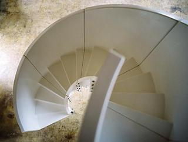
Normalmente las escaleras son un elemento prácticamente estructural en una casa, pero el diseñador holandés Floris Schoonderbeek se ha planteado convertirla en un mueble que no sirva intrínsecamente para acceder a otra planta, sino simplemente como elemento decorativo o para verlo todo desde otro punto de vista. Esta es la idea de Elementstair, la escalera de caracol modular y portátil.
Consta de varios módulos de tamaños y formas diferentes para hacer todo tipo de escaleras y están disponibles en todo tipo de colores. Se conectan exteriormente mediante tuercas y tornillos que sujetan los extremos finales de cada módulo.
Al ser “portátil”, la próxima vez que tengas que hacer alguna chapuza en casa, en vez de usar un escalera de toda la vida, puedes sacar a relucir tus encantos de albañil hipster y montarte tu escalera de caracol para cambiar una bombilla o pintar el techo.
Pero eso sí, al no estar fijada lo suficiente a una estructura firme, subirse a ella puede ser el preludio de una hostia fina filipina, aunque más elegante que un pavo real con chistera bebiendo brandy.
No mencionan el precio por ningún lado, pero ahora que eres mayor te mereces este LEGO gigante, además seguro que con lo enormes que son las casas ahora te sobra espacio para poner una escalera que no lleve a ninguna parte. [Remodelista]
Thu, 05 Apr 2012 23:42:48 GMT
Mame Cam XL DSLR, la versión de bolsillo de la Canon 5D MK III
Mame Cam XL DSLR, la versión de bolsillo de la Canon 5D MK III
Abramos el debate: ¿importa el tamaño? Bueno, según para qué. Y según qué tamaños, que para todo siempre habrá un exceso y un defecto. En el campo de la fotografía hubo desde siempre un interés por hacer cámaras minúsculas por … Sigue leyendo →
historias relacionadas
Imágenes del apocalipsis: así son las calles más populosas del mundo sin un alma circulando por ellas
SushiBot, la impresora que lía 300 rollos de maki por hora
ODDNS, el anti-SOPA legal
El brazo-teléfono [No hay mal que por bien no venga]
Impresora de chocolate 3D [Se acabaron las depresiones tecnológicas]
Abramos el debate: ¿importa el tamaño? Bueno, según para qué. Y según qué tamaños, que para todo siempre habrá un exceso y un defecto. En el campo de la fotografía hubo desde siempre un interés por hacer cámaras minúsculas por comodidad y por cuestiones tales como el espionaje. La cámara de la que os hablamos hoy tiene el mismo aspecto exterior que una conocida réflex digital, la Canon 5D MK III, con una importante salvedad: su tamaño, considerablemente menor. Pero ello no le impide ser capaz de hacer fotos más que aceptables al alcanzar una resolución 720p aunque pesa poco más de 150 gramos.
Se llama Mame Cam XL DSLR y a pesar de esa XL de su denominación su talla más bien debería ser XS.
Tiene aspecto y dimensiones de juguete, pues mide 154x135x105 mm y pesa 154 gramos, pero ahí terminan los juegos. Tiene una pantalla de 1,5 pulgadas con una resolución de 480×240 píxeles y es capaz de capturar vídeo a resolución 720p así como fotografías de 5 megapíxeles con una resolución de 2560×1920.
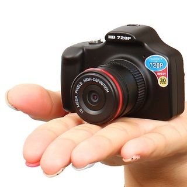
Las fotos y vídeos se almacenan en una tarjeta de memoria microSD de hasta 64 Gb y además tiene un zoom digital de cuatro aumentos. El precio tampoco es demasiado grande en comparación con su hermana pequeña, unos 129 € y ya puedes presumir (en pequeño) de cámara. La gran ventaja es que te cabe en el bolsillo y no te pesará ni en el hombro ni en el cuello.─[GeekStuff4U]